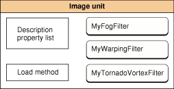

Core Image Concepts
Core Image is an extensible architecture available starting in Mac OS X v10.4 for near real-time, pixel-accurate image processing of graphics as well as video. You can perform the following types of operations by using filters that are bundled in Core Image or that you or another developer create:
Crop images.
Correct color, such as perform white point adjustment.
Apply color effects, such as sepia tone.
Blur or sharpen images.
Composite images.
Warp or transform the geometry of an image.
Generate color, checkerboard patterns, Gaussian gradients, and other pattern images.
Add transition effects to images or video.
Provide real-time color adjustment on video.
Figure 1-1 gives a general idea of where Core Image fits with other graphics technologies in Mac OS X. Core Image is integrated with these technologies, allowing you to use them together to achieve a wide range of results. For example, you can use Core Image to process images created in Quartz 2D (Core Graphics) and textures created in OpenGL. You can also apply Core Image filters to video played using Core Video.
This chapter provides an overview of the Core Image technology and describes how you can use the programming interface in your application. It also discusses how Core Image works behind the scenes to achieve fast, stunning, near real-time image processing.
In this section:
Core Image and the GPU
Filter Clients and Filter Creators
The Processing Path
Coordinate Spaces
The Region of Interest
Executable and Nonexecutable Filters
Color Components and Premultiplied Alpha
See Also
Core Image and the GPU
Up until now OpenGL, the industry standard for high performance 2D and 3D graphics, has been the primary gateway to the graphics processing unit (GPU). If you wanted to use the GPU for image processing, you needed to know OpenGL Shading Language. Core Image changes all that. With Core Image, you don’t need to know the details of OpenGL to harness the power of the GPU for image processing. Core Image handles OpenGL buffers and state management for you automatically. If for some reason a GPU is not available, Core Image uses a CPU fallback to ensure that your application runs. Core Image operations are opaque to you; your software just works.
Core Image hides the details of low-level graphics processing by providing an easy-to-use application programming interface (API) implemented in the Objective-C language. The Core Image API is part of the Quartz Core framework (QuartzCore.framework). You can use Core Image from the Cocoa and Carbon frameworks by linking to this framework.
Filter Clients and Filter Creators
Core Image is designed for two types of developers—filter clients and filter creators. If you plan only to use Core Image filters, you are a filter client. If you plan to write your own filter, you are a filter creator. This section describes Core Image filters from the perspective of each type of developer, and provides an overview of what each needs to know to use Core Image.
Core Image comes with over 100 built-in filters ready to use by filter clients who want to support image processing in their application. Core Image Filter Reference describes these filters. The list of built-in filters can change, so for that reason, Core Image provides methods that let you query the system for the available filters. You can also load filters that third-party developers package as image units. You’ll read more about image units later in this chapter.
You can get a list of all filters or narrow your query to get filters that fit a particular category, such as distortion filters or filters that work with video. A filter category specifies the type of effect—blur, distortion, generator, and so forth—or its intended use—still images, video, nonsquare pixels, and so on. A filter can be a member of more than one category. A filter also has a display name, which is the name that should be shown in the user interface and a filter name, which is the name you use to access the filter programmatically. You’ll see how to perform queries in “Using Core Image Filters.”
Most filters have one or more input parameters that let you control how processing is done. Each input parameter has an attribute class that specifies its data type, such as NSNumber. An input parameter can optionally have other attributes, such as its default value, the allowable minimum and maximum values, the display name for the parameter, and any other attributes that are described in CIFilter.
For example, the color monochrome filter has three input parameters—the image to process, a monochrome color, and the color intensity. You supply the image and have the option to set a color and color intensity. Most filters, including the color monochrome filter, have default values for each nonimage input parameter. Core Image uses the default values to process your image if you choose not to supply your own values for the input parameters.
Filter attributes are stored as key-value pairs. The key is a constant that identifies the attribute and the value is the setting associated with the key. Core Image attribute values are typically one of the following data types:
Strings (
NSStringobjects), which are used for such things as display names.Floating-point numbers (
NSNumberdata type), which are used to specify scalar values such as intensity levels and radii.Vectors (
CIVectorobjects), which can have 2, 3, or 4 elements, each of which is a floating-point number. These are used to specify positions, areas, and color values.Colors (
CIColorobjects), which specify color values and a color space to interpret the values in.Images (
CIImageobjects), which are lightweight objects that specify image “recipes.”Transforms (
NSAffineTransformobjects), which specify an affine transformation to apply to an image.
Core Image uses key-value coding, which means you can get and set values for the attributes of a filter by using the methods provided by the NSKeyValueCoding protocol.
Note: Key-value coding is a mechanism for accessing the properties of objects in Objective-C. To use Core Image effectively, you need to be familiar with the NSKeyValueCoding protocol. For more information, see Key-Value Coding Programming Guide.
Let’s take a closer look at the components of a typical filter, as shown in Figure 1-2. The shaded area of the figure indicates parts that are “under the hood”—the parts that a filter client does not need to know anything about but which a filter creator must understand. The portion that’s not shaded shows two methods—attributes and outputImage—that the filter client calls. The filter’s attributes method is what you call to obtain a list of the filter attributes discussed previously, including the filter’s input parameters and the string that you can use to display the filter name in the user interface. The outputImage method assembles and stores the calculations necessary to produce an image but does not actually cause Core Image to process the image. That’s because Core Image uses lazy evaluation. In other words, Core Image doesn’t process any image until it comes time to actually paint the processed pixels to a destination. All the outputImage method does is to assemble the calculations that Core Image needs when the time comes, and store the calculations (or, image “recipe”) in a CIImage object. The actual image is only rendered (and hence, the calculations performed) if there is an explicit call to an image-drawing method, such as drawImage:atPoint:fromRect: or drawImage:inRect:fromRect:.
Core Image stores the calculations until your application issues a command to draw the image. At that time, Core Image calculates the results. Lazy evaluation is one of the practices that makes Core Image fast and efficient. At rendering time, Core Image can see if more than one filter needs to be applied to an image. If so, it can concatenate multiple “recipes” into one operation, which means each pixel is processed once rather than many times. Figure 1-3 illustrates how lazy evaluation can make image processing more efficient for multiple operations. The final image is a scaled-down version of the original. For the case of a large image, applying color adjustment before scaling down the image requires more processing power than scaling down the image and then applying color adjustment. Because Core Image waits until the last possible moment to apply filters, it can perform these operations in reverse order, which is more efficient.
For the filter creator, the most exciting component of a filter is the kernel, which is at the heart of every filter. The kernel specifies the calculations that are performed on each source image pixel. Kernel calculations can be very simple or complex. A very simple kernel for a “do nothing” filter could simply return the source pixel:
destination pixel = source pixel
Filter creators use a variant of OpenGL Shading Language (glslang) to specify per-pixel calculations. (See Core Image Kernel Language Reference.) The kernel is opaque to a filter client. A filter can actually use several kernel routines, passing the output of one to the input of another. For instructions on how to write a custom filter, see “Creating a Custom Filter.”
Note: A kernel is the actual routine, written using the Core Image variant of glslang, that a filter uses to process pixels. A CIKernel object is a Core Image object that contains a kernel routine. When you create a filter, you’ll see that the kernel routine exists in its own file—one that has a .cikernel extension. You create a CIKernel object programmatically by passing a string that contains the kernel routine.
Filter creators can make their custom filters available to any application by packaging them as a plug-in, or image unit, using the architecture specified by the NSBundle class. An image unit can contain more than one filter, as shown in Figure 1-4. For example, you could write a set of filters that perform different kinds of edge detection and package them as a single image unit. Filter clients can use the Core Image API to load the image unit and to obtain a list of the filters contained in that image unit. See “Loading Image Units” for basic information. See Image Unit Tutorial for in-depth examples and detailed information on writing filters and packaging them as standalone image units.
Figure 1-4 An image unit contains packaging information along with one or more filter definitions
The Processing Path
Figure 1-5 shows the pixel processing path for a filter that operates on two sources images. Source images are always specified as CIImage objects. Core Image provides a variety of ways to get image data. You can supply a URL to an image, read raw image data (using the NSData class), or convert a Quartz 2D image (CGContextRef), an OpenGL texture, or a Core Video image buffer (CVImageBufferRef) to a CIImage object.
Note that the actual number of input images, and whether or not the filter requires an input image, depends on the filter. Filters are very flexible—a filter can:
Work without an input image. Some filters generate an image based on input parameters that aren’t images. (For example, see the
CICheckerboardGeneratorandCIConstantColorGeneratorfilters in Core Image Filter Reference.)Require one image. (For example, see the
CIColorPosterizeandCICMYKHalftonefilters in Core Image Filter Reference.)Require two or more images. Filters that composite images or use the values in one image to control how the pixels in another image are processed typically require two or more images. One input image can act as a shading image, an image mask, a background image, or provide a source of lookup values that control some aspect of how the other image is processed. (For example, see the
CIShadedMaterialfilter in Core Image Filter Reference.)
When you process an image, it is your responsibility to create a CIImage object that contains the appropriate input data.
Note: Although a CIImage object has image data associated with it, it is not an image. You can think of a CIImage object as an image “recipe.” A CIImage object has all the information necessary to produce an image, but Core Image doesn’t actually render an image until it is told to do so. This “lazy evaluation” method (see “Filter Clients and Filter Creators”) allows Core Image to operate as efficiently as possible.
Pixels from each source image are fetched by a CISampler object, or simply a sampler. As its name suggests, a sampler retrieves samples of an image and provides them to a kernel. A filter creator provides a sampler for each source image. Filter clients don’t need to know anything about samplers.
A sampler defines:
A coordinate transform, which can be the identity transform if no transformation is needed.
An interpolation mode, which can be nearest neighbor sampling or bilinear interpolation (which is the default).
A wrapping mode that specifies how to produce pixels when the sampled area is outside of the source image—either to use transparent black or clamp to the extent.
The filter creator defines the per-pixel image processing calculations in the kernel, but Core Image handles the actual implementation of those calculations. Core Image determines whether the calculations are performed using the GPU or the CPU. Core Image implements hardware rasterization through OpenGL. It implements software rasterization through an emulation environment specifically tuned for evaluating fragment programs with nonprojective texture lookups over large quadrilaterals (quads).
Although the pixel processing path is from source image to destination, the calculation path that Core Image uses begins at the destination and works its way back to the source pixels, as shown in Figure 1-6. This backward calculation might seem unwieldy, but it actually minimizes the number of pixels used in any calculation. The alternative, which Core Image does not use, is the brute force method of processing all source pixels, then later deciding what’s needed for the destination. Let’s take a closer look at Figure 1-6.
Assume that the filter in Figure 1-6 performs some kind of compositing operation, such as source-over compositing. The filter client wants to overlap the two images, so that only a small portion of each image is composited to achieve the result shown at the left side of the figure. By looking ahead to what the destination ought to be, Core Image can determine which data from the source images effect the final image and then restrict calculations only to those source pixels. As a result, the samplers fetch samples only from shaded areas in the source images shown in Figure 1-6.
Note the box in the figure that’s labeled domain of definition. The domain of definition is simply a way to further restrict calculations. It is an area outside of which all pixels are transparent (that is, the alpha component is equal to 0). In this example, the domain of definition coincides exactly with the destination image. Core Image lets you supply a CIFilterShape object to define this area. The CIFilterShape class provides a number of methods that can define rectangular shapes, transform shapes, and perform inset, union, and intersection operations on shapes. For example, if you define a filter shape using a rectangle that is smaller than the shaded area shown in Figure 1-6, then Core Image uses that information to further restrict the source pixels used in the calculation.
Core Image promotes efficient processing in other ways. It performs intelligent caching and compiler optimizations that make it well suited for such tasks as real-time video control. It caches intermediate results for any data set that is evaluated repeatedly. Core Image evicts data in least-recently-used order whenever adding a new image would cause the cache to grow too large, which means objects that are reused frequently remain in the cache, while those used once in a while might be moved in and out of the cache as needed. Your application benefits from Core Image caching without needing to know the details of how caching is implemented. However, you get the best performance by reusing objects (images, contexts, and so forth) whenever you can.
Core Image also gets great performance by using traditional compilation techniques at the kernel and pass levels. The method Core Image uses to allocate registers minimizes the number of temporary registers (per kernel) and temporary pixel buffers (per filter graph). The compiler performs CSE and peephole optimization and automatically distinguishes between reading data-dependent textures, which are based on previous calculations, and those that are not data-dependent. Again, you don’t need to concern yourself with the details of the compilation techniques. The important point is that Core Image is hardware savvy; it uses the power of the GPU whenever it can, and it does so in smart ways.
Coordinate Spaces
Core Image performs operations in a device-independent working space, similar in concept to what’s shown in Figure 1-7. The Core Image working space is, in theory, infinite in extent. A point in working space is represented by a coordinate pair (x, y), where x represents the location along the horizontal axis and y represents the location along the vertical axis. Coordinates are floating-point values. By default, the origin is point (0,0).
When Core Image reads images, it translates the pixel locations into device-independent working space coordinates. When it is time to display a processed image, Core Image translates the working space coordinates to the appropriate coordinates for the destination, such as a display.
When you write your own filters, you need to be familiar with two coordinate spaces—the destination coordinate space and the sampler space. The destination coordinate space represents the image you are rendering to. The sampler space represents what you are texturing from (another image, a lookup table, and so on). You obtain the current location in destination space using the destCoord function whereas the samplerCoord function provides the current location in sample space. (See Core Image Kernel Language Reference.)
Keep in mind that if your source data is tiled, the sampler coordinates have an offset (dx/dy). If your sample coordinates have an offset, it may be necessary for you to convert the destination location to the sampler location using the function samplerTransform.
The Region of Interest
Although not explicitly labeled in Figure 1-6, the shaded area in each of the source images is the region of interest for samplers depicted in the figure. The region of interest, or ROI, defines the area in the source from which a sampler takes pixel information to provide to the kernel for processing. If you are a filter client, you don’t need to concern yourself with the ROI. But if you are a filter creator, you’ll want to understand the relationship between the region of interest and the domain of definition.
Recall that the domain of definition describes the bounding shape of a filter. In theory, this shape can be without bounds. Consider, for example, a filter that creates a repeating pattern that could extend to infinity.
The ROI and the domain of definition can relate to each other in the following ways:
They coincide exactly—there is a 1:1 mapping between source and destination. For example, a hue filter processes a pixel from the working space coordinate (r,s) in the ROI to produce a pixel at the working space coordinate (r,s) in the domain of definition.
They are dependent on each other, but modulated in some way. Some of the most interesting filters—blur and distortion, for example—use many source pixels in the calculation of one destination pixel. For example, a distortion filter might use a pixel (r,s) and its neighbors from the working coordinate space in the ROI to produce a single pixel (r,s) in the domain of definition.
The domain of definition is calculated from values in a lookup table that are provided by the sampler. The location of values in the map or table are unrelated to the working space coordinates in the source image and the destination. A value located at (r,s) in a shading image does not need to be the value that produces a pixel at the working space coordinate (r,s) in the domain of definition. Many filters use values provided in a shading image or lookup table in combination with an image source. For example, a color ramp or a table that approximates a function, such as the
arcsinfunction, provides values that are unrelated to the notion of working coordinates.
Unless otherwise instructed, Core Image assumes that the ROI and the domain of definition coincide. If you write a filter for which this assumption doesn’t hold, you need to provide Core Image with a routine that calculates the ROI for a particular sampler.
See “Supplying an ROI Function” for more information.
Executable and Nonexecutable Filters
You can categorize custom Core Image filters on the basis of whether or not they require an auxiliary binary executable to be loaded into the address space of the client application. As you use the Core Image API, you’ll notice that these are simply referred to as executable and nonexecutable. Filter creators can choose to write either kind of filter. Filter clients can choose to use only nonexecutable or to use both kinds of filters.
Security is the primary motivation for distinguishing CPU executable and CPU nonexecutable filters. Nonexecutable filters consist only of a Core Image kernel program to describe the filter operation. In contrast, an executable filter also contains machine code that runs on the CPU. Core Image kernel programs run within a restricted environment and cannot pose as a virus, Trojan horse, or other security threat, whereas arbitrary code that runs on the CPU can.
Nonexecutable filters have special requirements, one of which is that nonexecutable filters must be packaged as part of an image unit. Filter creators can read “Writing Nonexecutable Filters” for more information. Filter clients can find information on loading each kind of filter in “Loading Image Units.”
Color Components and Premultiplied Alpha
Premultiplied alpha is a term used to describe a source color, the components of which have already been multiplied by an alpha value. Premultiplying speeds up the rendering of an image by eliminating the need to perform a multiplication operation for each color component. For example, in an RGB color space, rendering an image with premultiplied alpha eliminates three multiplication operations (red times alpha, green times alpha, and blue times alpha) for each pixel in the image.
Filter creators must supply Core Image with color components that are premultiplied by the alpha value. Otherwise, the filter behaves as if the alpha value for a color component is 1.0. Making sure color components are premultiplied is important for filters that manipulate color.
By default, Core Image assumes that processing nodes are 128 bits-per-pixel, linear light, premultiplied RGBA floating-point values that use the GenericRGB color space. You can specify a different working color space by providing a Quartz 2D CGColorSpace object. Note that the working color space must be RGB-based. If you have YUV data as input (or other data that is not RGB-based), you can use ColorSync functions to convert to the working color space. (See Quartz 2D Programming Guide for information on creating and using CGColorspace objects.)
With 8-bit YUV 4:2:2 sources, Core Image can process 240 HD layers per gigabyte. Eight-bit YUV is the native color format for video source such as DV, MPEG, uncompressed D1, and JPEG. You need to convert YUV color spaces to an RGB color space for Core Image.
See Also
Shantzis, Michael A., “A Model for Efficient and Flexible Image Computing,” (1994), Proceedings of the 21st Annual Conference on Computer Graphics and Interactive Techniques.
Smith, Alvy Ray, “Image Compositing Fundamentals,” Memo 4, Microsoft, July 1995. Available from ftp://ftp.alvyray.com/Acrobat/4_Comp.pdf
© 2004, 2008 Apple Inc. All Rights Reserved. (Last updated: 2008-06-09)